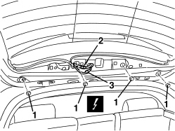
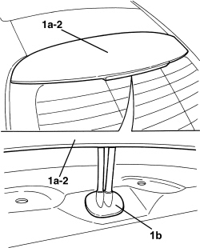

7210G76 REAR SPOILER - R.R.
- Path
- Procedures > 72 PANELS AND FRAMES > 7210 REMOVING-REFITTING > 7210G ACCESSORY PARTS > 7210G76 REAR SPOILER - R.R.
- Kind
- repair procedure (removal / refitting; the operation number is the code)
- Applies to
- all engines; all production periods
- Interactive page
- https://sloeber94.github.io/elrnDB-aBrrSpdr/en/#/946002746
Applies to: all engines; all production periods
 Removing
Removing
 Refitting
RefittingOp. 7015A06 TAILGATE UPPER INTERIOR PANEL - R.R.
1. Undo the spoiler retaining nuts.
2. Disconnect the connection for the rearscreen washer fluid pipe.
3. Disconnect the electrical connection.
Description | Component |
|---|---|
ADDITIONAL REAR LIGHT (THIRD BRAKE LIGHT) |

Applies to: all engines; all production periods
- Lower the tailgate.
1. Lift the spoiler (1a) slightly and release the duct seal (1b).
2. Remove the spoiler and third brake light.

Applies to: all engines; all production periods
Refitting
Removing- Check that the spoiler is not damaged.
- Position the spoiler attaching the duct seal.
- Raise the tailgate and connect the electrical connection.
- Connect the connection for the rearscreen washer fluid pipe.
- Tighten the spoiler retaining nuts.